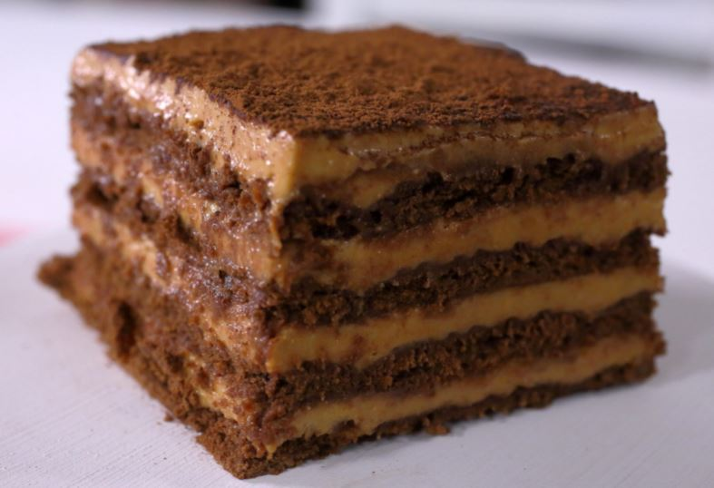

Ingredientes
- Galletitas chocolinas
- Dulce de leche
- Queso crema
- Cafe instantaneo
- Cacao
Preparacion
- Batir el cafe instantaneo en una taza y colocar agua caliente, dejar reposar hasta que el agua este a temperatura ambiente.
- Mojar las chocolinas en el cafe e ir colocandolas en una fuente en filas de 4 galletitas.
- Mezclar en un recipiente el queso crema y el dulce de leche hasta que esten completamente incorporados.
- Sobre la base de chocolinas colocar con una espatula la mezcla de dulce de leche generando una capa delgada.
- Luego colocar otra capa de chocolinas remojadas en cafe y volver a repetir el procedimiento colocando el relleno, hay que repetir este procedimiento hasta que queden cuatro capas de chocolinas.
- Despues de colocar la ultima capa de relleno espolvorear con cacao y dejar enfriar en la heladera.